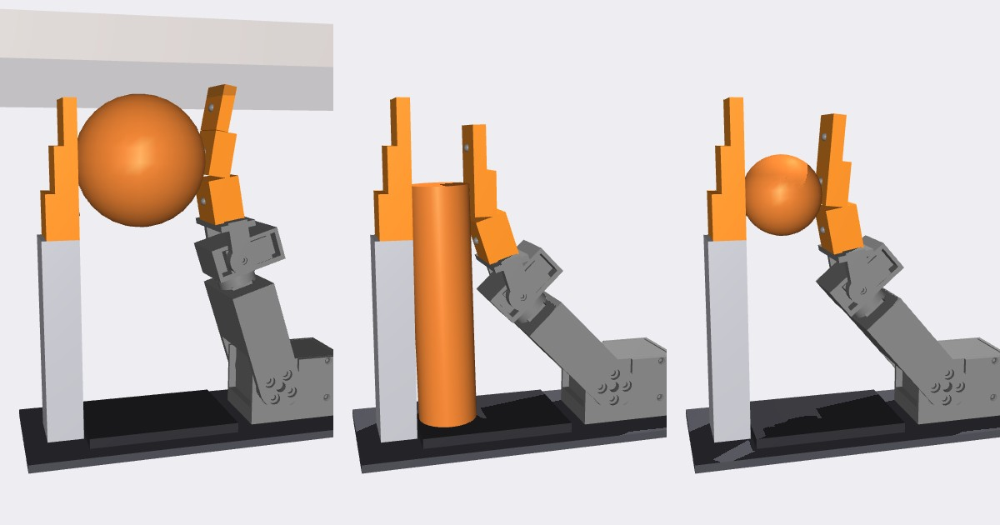
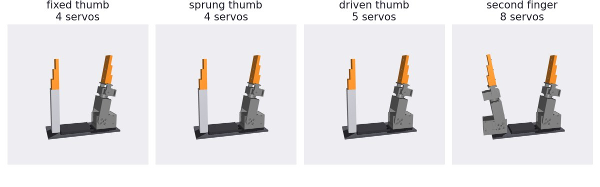
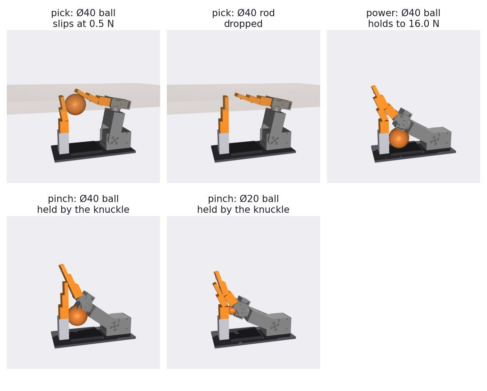
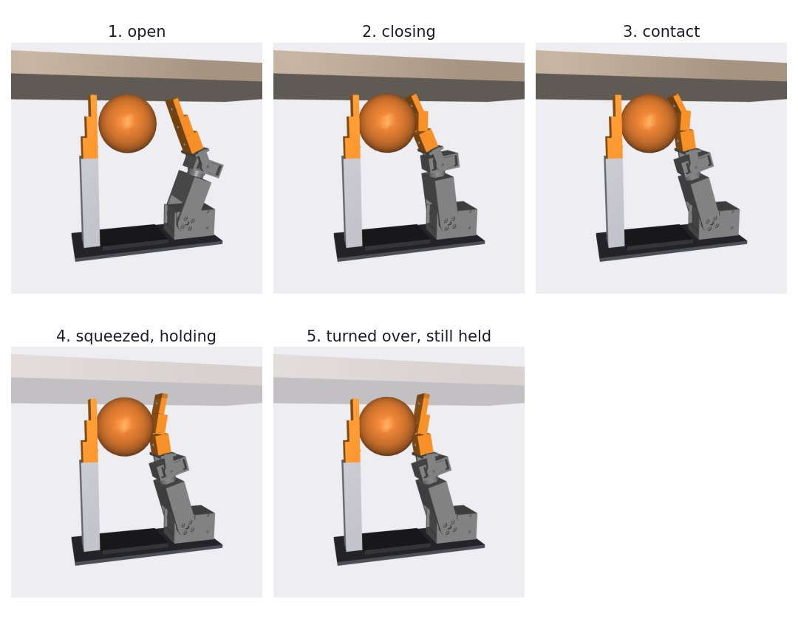
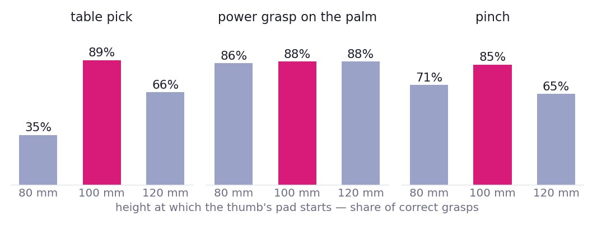
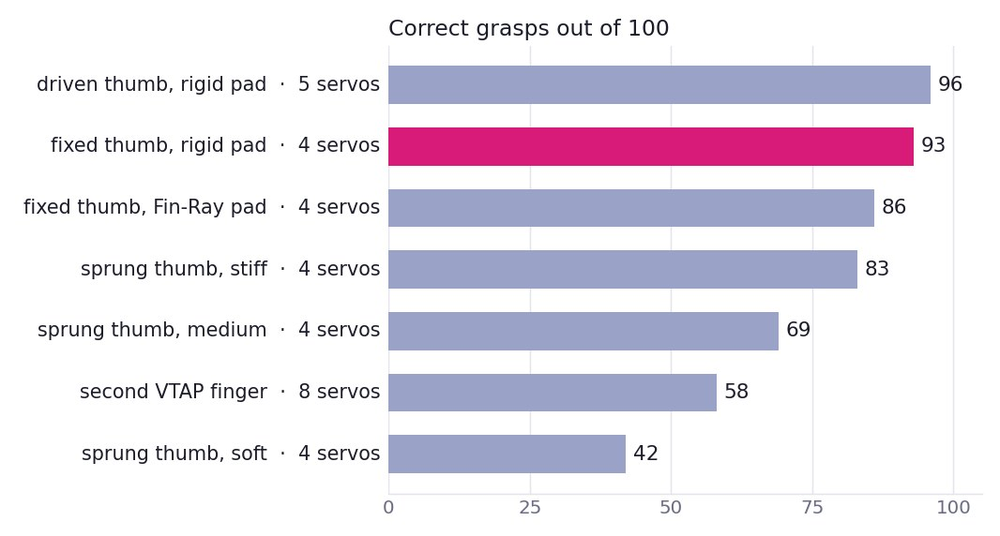
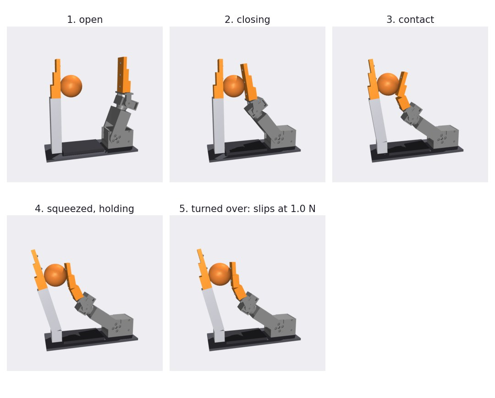
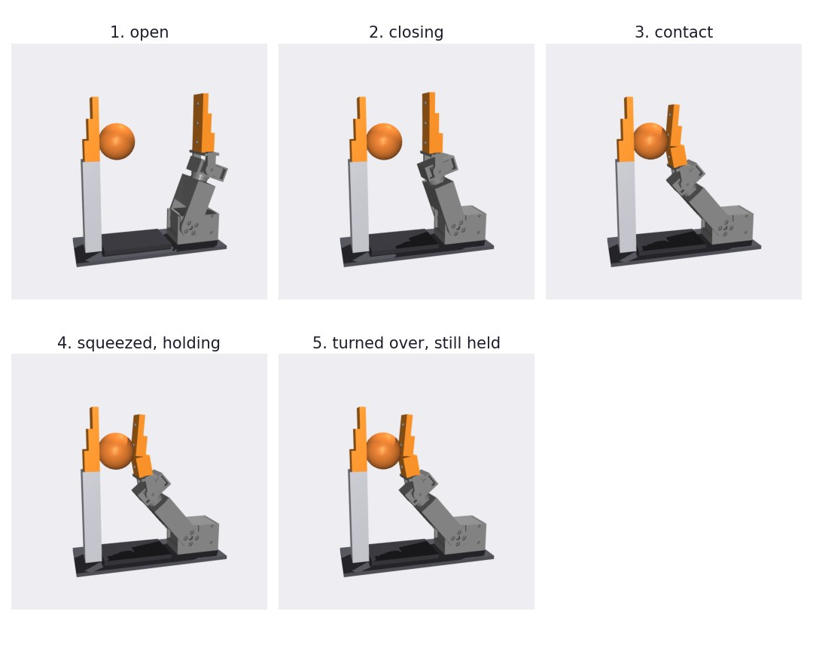
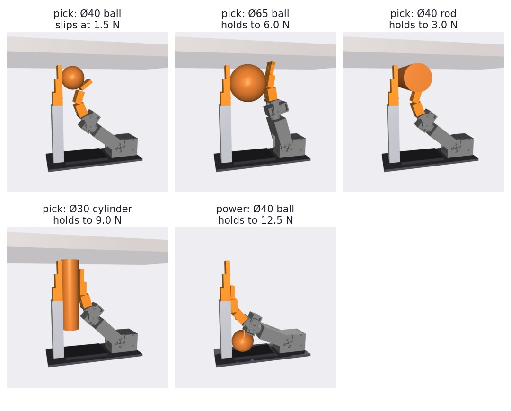
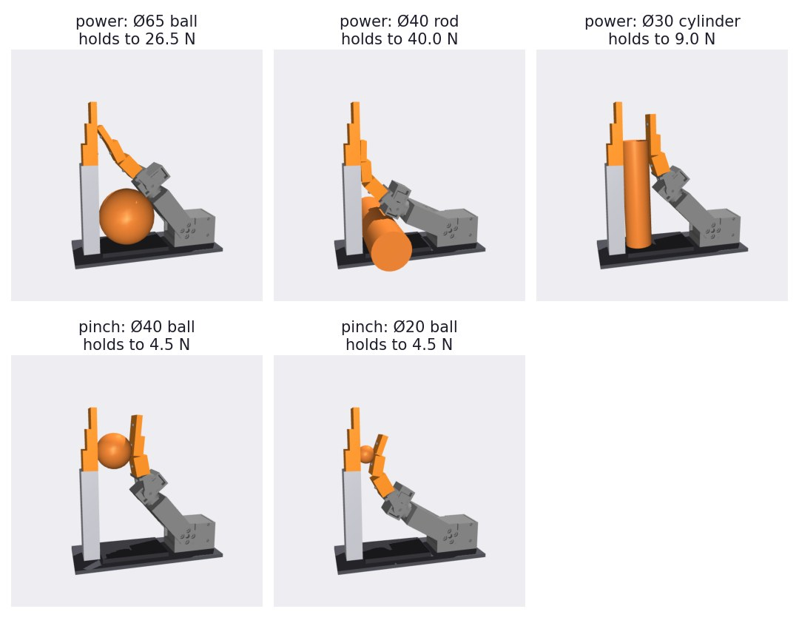

Two days ago we rebuilt a 13-servo research gripper from its paper. Then we asked how little of it you need. The VTAP rebuild has three four-joint fingers around a sliding palm, weighs about 1.1 kg and needs thirteen servos. Most of what a gripper does on the end of a small arm is pick a thing up and hold it. So: keep one of those fingers exactly as designed, put something opposite it, and find out what that something has to be. A fixed post? A sprung one? A driven one? A palm?
We answered that in simulation, before drawing a single part, using the grasp-simulation stage of dryfit, our define, assemble, verify, simulate harness. The answer is a fixed thumb with a rigid-backed pad, of a particular height, and four servos. This post is the path to it, with the pictures the simulation produced along the way, including the wrong turns.

01 / The design space, as one line of code
The finger is not re-modelled. The simulation imports the finger from the VTAP design's own parameter file: same link lengths, same servo torque limits, same printed-part meshes, same compliant Fin-Ray tip. Everything new lives in one small record: what kind of thumb, how far from the centre, at what height its pad starts, how much it leans, and whether its pad is a Fin-Ray or a skin on a rigid backing. Four kinds of thumb went in:

The fixed and driven thumbs look the same because they are the same shape; one has a servo at its base. The sprung thumb has a torsion spring there and a stop, so it can only yield outward. The fourth option, a second full finger, is the reference: what you would build if you just deleted one finger from the original.
02 / The first attempt was wrong in a useful way
Our first thumb was a short post close to the middle. It seemed reasonable: about as tall as the objects, near enough to oppose the finger. The simulation's first report said nearly everything was "held", and the pictures said otherwise.

The finger is 155 mm from its base knuckle to its tip, and the thumb was 106 mm tall. Picking from a table, the fingertip sails over the thumb and the object is either dropped or barely trapped. In a pinch the object ends up clamped between the thumb and the finger's hard knuckle housing while the soft pad waves in the air above it. That counts as holding and is not a pinch.
Two changes to the test came out of this, and they mattered more than any change to the design. First, "held" stopped being the score. After every grasp the hand is turned over and the object is pushed along three axes with a rising force until it escapes; a grasp only counts if it survives 2 N in every direction (the objects weigh 0.2 to 0.9 N), and a pinch only counts if the load is carried by the two pads. Second, we added the grasp that actually matters on an arm: the hand points down at a table, the fingertip skims the surface toward the thumb, and the table is then taken away.
03 / What the grasps look like
Each grasp closes on servo current, the way the hardware will. In the table pick, the two finger joints are coordinated so the fingertip stays 3 mm off the table while it sweeps the object onto the thumb; when the finger feels the object pinned, it squeezes until the knuckle servo reaches a current setpoint of about 0.7 A.

The simulation caught three of its own mistakes on the way to that picture. A palm pad drawn too wide sat inside the sweep of the finger's base bracket; the known-physics self-test flagged a 2.7 mm error in fingertip position before any grasp was run. The first pinches gripped with about 1 N because the object was presented two-thirds of the way up two soft pads, where neither can push; moving the pinch to the stiff root of the pads gave 5 to 6 N. And the first wrap law stopped as soon as the fingertip touched the thumb, leaving a ball loose under the finger; it now folds the tip back out of the way and keeps closing until the object itself is pinned.
04 / How tall, how far
Thumb height decides the table pick. We swept 36 fixed-thumb positions (four distances from the centre, three heights, three lean angles), ten grasps each, at two pad stiffnesses.

The pad should start 100 mm up, which puts the thumb's tip level with the fingertip when both are at the table. Twenty millimetres shorter and the pick drops to a third; twenty taller and the thumb gets in the way. The power grasp on the palm does not care, for a reason the force readout made obvious: with a ball or a rod lying on the palm, the thumb carries almost no load. The finger's lower link clamps the object down onto the palm pad. For this hand, the palm is the opposing surface in a power grasp and the thumb earns its place in the pinch and the pick. A low fixed palm pad was enough; nothing here needed the palm to move.
05 / Fixed, sprung or driven
Then the question we started with. Each kind of thumb, at the best positions, 100 runs each: the ten grasps, five placement errors of up to 5 mm, two pad stiffnesses.

The fixed thumb scores 93 with four servos; driving it buys three more points for a fifth. Neither dropped anything in 100 runs. The misses are grasps that held but let go below 2 N on one axis.
A sprung thumb is worse the softer it gets. We expected passive compliance to help, since it does on our soft hands. Here it gives way exactly when the finger needs something to push against:


Against the soft spring the finger runs out of squeeze travel with 0.7 N on the ball. Against the fixed thumb the same closing law puts 6 N on it. The sprung thumb only wins at wrapping a ball on the palm, which the fixed thumb already does.
A soft pad on a thumb that cannot move is compliance in the wrong place. Swapping the thumb's Fin-Ray for a skin on a rigid backing took the fixed thumb from 86 to 93. The finger keeps its Fin-Ray; one compliant side is enough.
The second-finger row needs a caveat: we did not tune the closing laws for two moving digits, so 58 says our laws are one-finger laws, not that two fingers are worse than one.
06 / The design, and what we still don't know


One VTAP finger, a fixed thumb post 110 mm away with a rigid-backed pad from 100 to 166 mm, a low palm pad between them. Four servos instead of thirteen, and the knuckle servo never goes above 1.5 A of its 2.7 A stall.
Three things are open, and the first is visible in the top-left frame above.
- Pad stiffness. We have not measured how stiff a printed TPU Fin-Ray is, so every design was run with a soft and a ten-times-stiffer pad model. With the stiff model, every fixed and driven thumb made all 60 picks and all 30 pinches. With the soft one, the table pick of the Ø40 ball holds but lets go at 1.5 N, because the ball sits at the floppy end of the finger's pad. A bench measurement of one printed Fin-Ray settles this.
- Two of the finger's four joints did nothing. The base swivel and the distal roll were never commanded; every grasp here is in one plane. A two-servo finger would have scored the same on these tasks. The extra joints buy reorienting an object in the hand, which we did not test.
- It is a simulation of boxes. The thumb and palm are parametric primitives. Nothing has been through the verify stage, which is where the VTAP build found nine defects.
What made this cheap is that the search ran before the CAD. The first 324-trial sweep took 15 seconds, so asking "what if the thumb were sprung" cost a line in a list and not a redesign. The design space, the three closing laws and the result tables sit next to the VTAP design in our effector library (not yet public; the grasp-simulation stage of dryfit is open at punkfab/effector-sim). Next is drawing the thumb for real and letting verify have its turn. Have a mechanism you'd like stripped down to what it needs? Start a project.